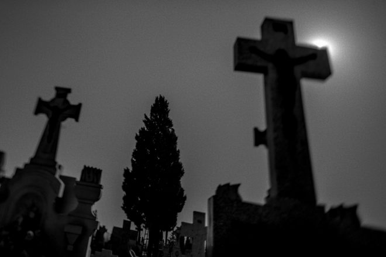

Todas nuestras salas:
Apocalipsis Zombie

Corea del Norte volvió con su maldita costumbre de provocar, pero el flamante presidente de EEUU tuvo pocas pulgas y ordenó la invasión. Y lo que parecía la pelea de un león contra un mosquito tuvo un final inesperado. Los norcoreanos lanzaron casi todos sus misiles a mansalva con el secreto químico que tanto amenazaban, una mutación de laboratorio del mal de Creutzfeldtd-Jacob, más conocido como síndrome de la vaca loca, se dispersó por el mundo y en tan solo semanas pasó de epidemia a pandemia, de hecatombe a apocalipsis zombie.
Reservar AhoraStranger Things

Stranger Escape Valladolid es un juego para toda la familia, basado en la popular serie de la plataforma de vídeo bajo demanda. En Stranger Escape, los equipos podrán poner a prueba su habilidad en estancias ambientadas como en la serie. ¿Podrás salvar a Hawkins de la aniquilación?
Reservar AhoraCementerio
En 1968 un empresario y el Ayuntamiento de Torrent acuerdan la construcción del primer Cementerio Privado y casi cincuenta años después de su inauguración, Melquiades A. R. aceptó el puesto vacante de enterrador por su desesperada situación económica, aún sabiendo que había sucesos extraños. Ahora el Cementerio está precintado a la espera de que el juez autorice la investigación para aclarar qué ha pasado
Reservar AhoraÁrea 51

Han sido seleccionados para investigar un caso sin precedentes. Hemos descubierto un portal, un agujero de gusano que permite viajar por el espacio-tiempo hacia lugares que no podemos predecir con exactitud. El objetivo de su misión es indagar y realizar un reporte verbal al comandante a cargo de la misión, sobre la experiencia y los descubrimientos que realicen.
Reservar AhoraCientífico Loco
Tú y tu equipo han sido capturados por un científico loco y se encuentran encerrados en una celda de un laboratorio. Tu misión si eres lo suficientemente valiente para afrontarla será escapar en menos de 60 minutos, antes de que el científico ingrese a hacer sus experimentos malvados.
Reservar AhoraJuegos Macabros
¡Que comience el juego! Despertarás en un lugar tenebroso y tu objetivo será salir con vida de ese lugar antes de una hora. Este es un juego de ingenio e intuición, repleto de enigmas y pruebas macabras. ¡Es para los más valientes y arriesgados! Recuerda que trabajar en equipo es la clave para sobrevivir a este Escape Room.
Reservar Ahora